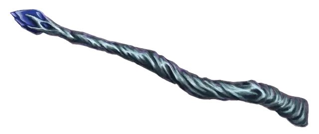

Волшебная палочка зимы
Wand of Winter
Волшебная палочка, редкая (требуется настройка)

Рекомендованная стоимость 501-5 000 зм
Волшебная палочка выглядит и на ощупь как сосулька.
У палочки есть 7 зарядов, которые можно использовать, чтобы творить заклинания с её помощью. С палочкой в руке, вы можете использовать ваше действие чтобы сотворить одно из следующих заклинаний, даже если вы не способны творить заклятия:
- Луч холода (ray of frost) (без траты зарядов, или 1 заряд, чтобы наложить его как заклинание 5 уровня; +5 к попаданию дальнобойной атакой заклинанием)
- Метель (sleet storm) (3 заряда; Сл 15).
- Град (ice storm) (4 заряда; Сл 15).
Никаких компонентов для этого не требуется.
Волшебная палочка восполняет 1к6+1 потраченных зарядов каждый день на рассвете. Если вы потратите последний заряд палочки, бросьте к20. При результате 20, палочка плавится у вас в руках - она разрушена навсегда.